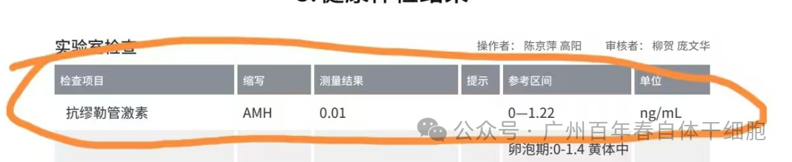
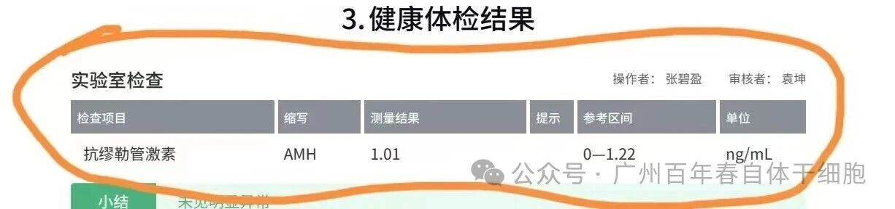
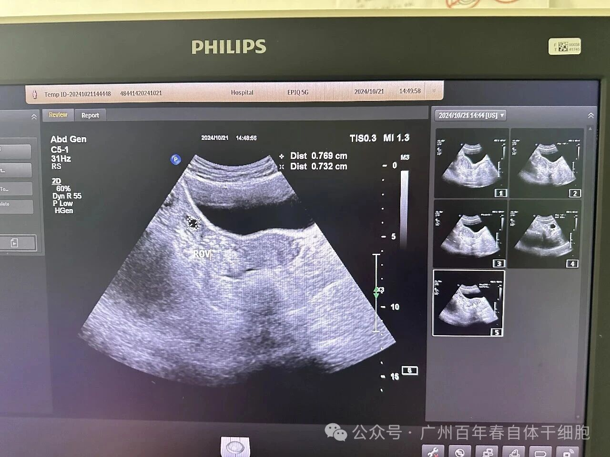
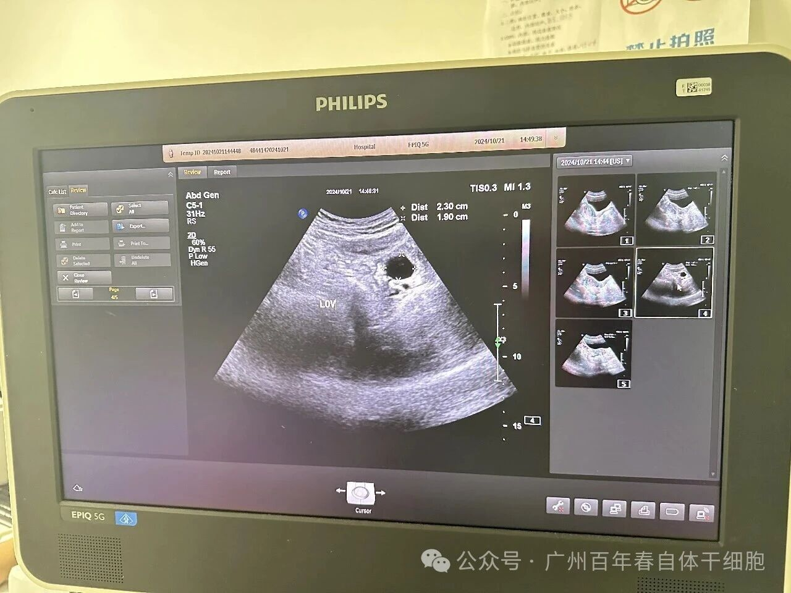
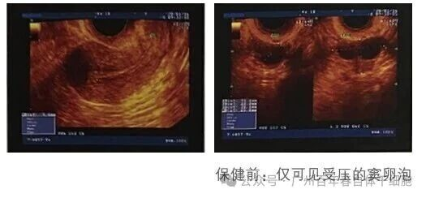
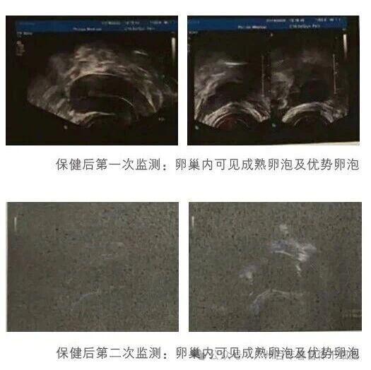
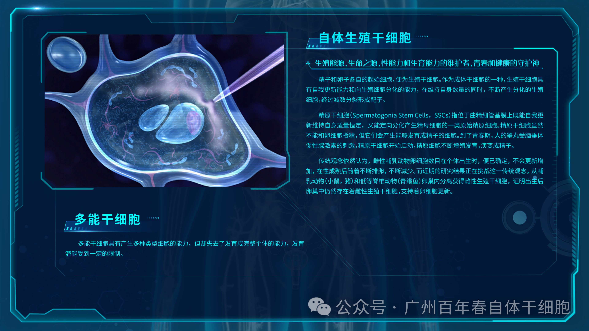
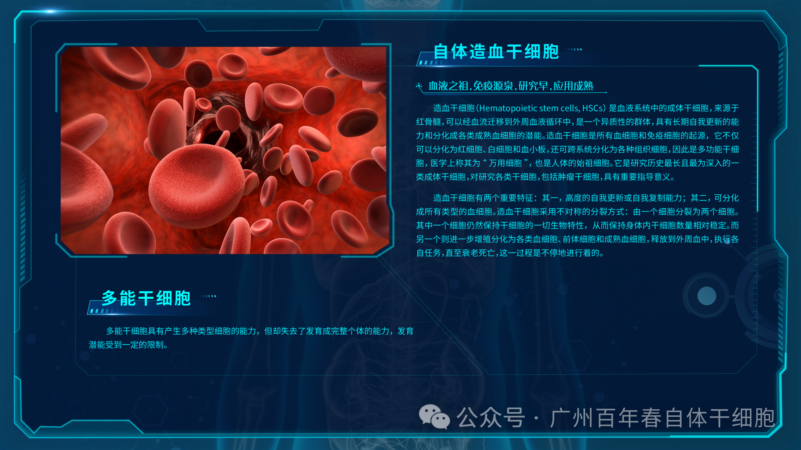
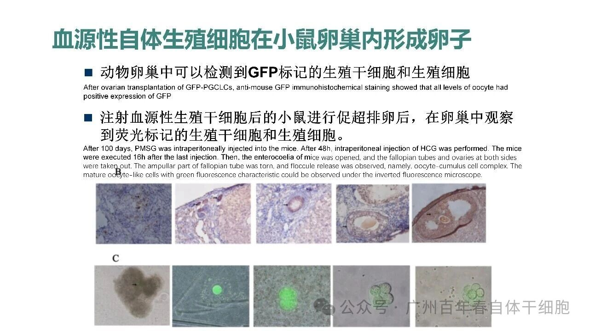
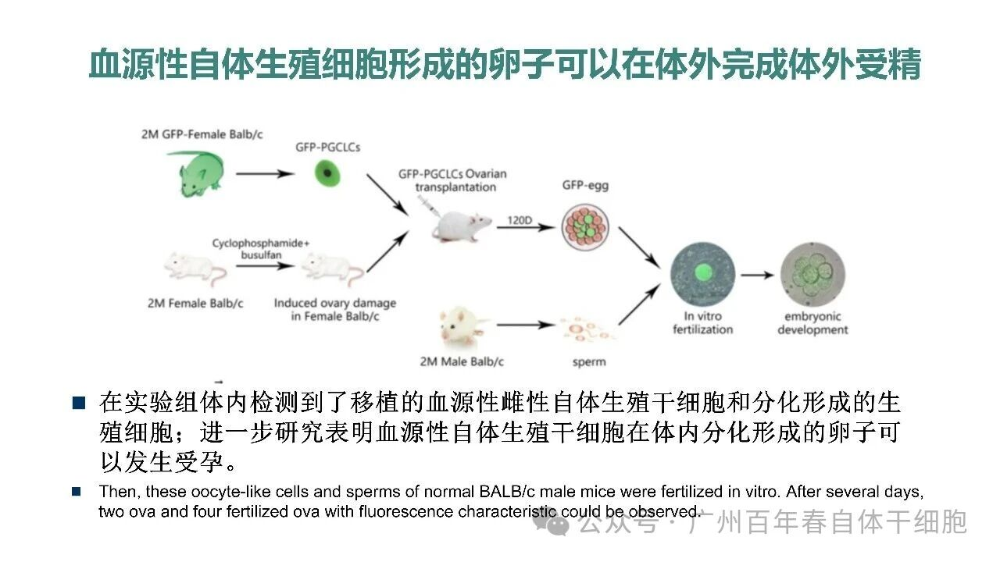

别等身体亮红灯！百年春自体干细胞，为您定制细胞级抗衰防线
2026-03-04

About Us
关于百年春
案例1：43岁的曹女士曾陷入生育困境：两次试管均因卵子数量少、质量差而失败，盆腔积液导致卵巢黏连严重，激素水平全面失衡。当常规治疗陷入僵局时，她选择了百年春自体干细胞保健技术，开启了一场震撼医学界的"卵巢重生"。
45天见证医学奇迹
百年春专家团队定制自体造血干细胞（静脉回输）＋自体生殖干细胞（靶向回输）结合保健修复。经过2个疗程2亿以上的自体干细胞联合保健，45天后的复查数据令人惊叹：
AMH值：从0.01ng/ml飙升至1.01ng/ml（参考值0.2-1.5），卵巢储备功能逐渐恢复，实现质的飞跃
FSH值：从25.54mIU/L降至8.3mIU/L，激素水平回归正常区间
盆腔积液：2.19cm的积液完全消失，卵巢结构清晰可见
"治疗后第28天，月经自然恢复"，曹女士激动地分享，"现在正在备孕中，终于能期待新生命的到来！"


△保健前后对比


△保健后45天B超复查
案例2：47岁的杨女士卵巢功能衰竭、月经不规律、连续9次流产，因想要小孩近两年服用激素类药物维持排卵功能，但停药后月经即停，更让她陷入“药物依赖-功能衰退”的恶性循环。B超检查仅见受压的窦性卵泡，其卵巢功能已如“枯树”，难以自然恢复。
经过百年春自体间充质干细胞+自体造血干细胞+自体生殖干细胞结合3个疗程2亿自体干细胞保健。
保健后两次监测B超结果都可见成熟卵泡及优势卵泡，卵巢体积增大，窦卵泡计数增多，雌二醇及AMH值逐渐上升。多次保健后更令人振奋的是，杨女士在停药后仍保持规律月经周期，且自然受孕成功，最终诞下健康婴儿。


△保健前后B超对比
自体干细胞疗法在器官功能修复领域，尤其是针对多系统损伤的综合干预方面，正展现出越来越广泛的潜力。对于卵巢功能衰退这类涉及内分泌、生殖及全身状态的复杂问题，单一修复手段往往难以满足需求，而结合多种自体干细胞的定制化方案，正在成为前沿探索方向之一。
针对卵巢衰退，百年春拥有干细胞前沿技术，制备多种类型自体干细胞协同修复，实现系统性的修复保健。
自体间充质干细胞：具备强大的旁分泌、免疫调节和组织再生能力，可归巢至受损卵巢，分泌VEGF、HGF、IGF等因子，促进卵泡发育、改善卵巢微环境。

自体生殖干细胞：理论上可定向分化为卵原细胞或支持细胞，直接参与卵巢生殖功能重建。

自体造血干细胞：虽主要参与血液系统重建，但其分泌的细胞因子可间接支持组织修复微环境，增强免疫稳态，为其他干细胞发挥作用提供支持性“土壤”。

将三者结合，不仅覆盖了结构性修复（如卵泡再生）、功能性恢复（如激素分泌）和系统性支持（如免疫与代谢平衡），还体现了从“局部修补”到“整体调控”的抗衰范式转变。
目前，已有150余例临床研究证实，自体干细胞移植可显著改善卵巢早衰患者的血清性激素水平（E2上升、FSH下降）、增加卵巢体积、缓解更年期症状，甚至实现自然妊娠或辅助生殖成功。其中一项II期临床试验显示，7.07%的患者实现自然妊娠，14.14%通过IVF成功怀孕。
动物实验已证实其在促进卵泡再生方面的潜力


△百年春自体干细胞动物试验验证安全性和有效性
自体干细胞这项技术不仅为卵巢早衰患者带来生育希望，更在抗衰老领域展现巨大潜力。研究表明，自体干细胞治疗可能通过调节PI3K/Akt信号通路等机制，延缓卵巢衰老进程。
卵巢功能衰竭并非“绝症”，而是身体发出的“修复信号”。自体干细胞疗法如同一把“生命钥匙”，为围绝经期女性打开重生之门。无论年龄几何，只要卵巢功能尚存一线生机，干细胞疗法就能让“枯树逢春”，让“生育寒冬”化为“希望之春”。
百年春自体干细胞保健技术——让卵巢功能逆转成为可能，让每一个母亲的梦不再遥远。
温馨提醒：治疗效果因个体卵巢受损程度、身体状况等因素存在差异，患者应在专业医生指导下进行充分评估后选择。
扫码关注